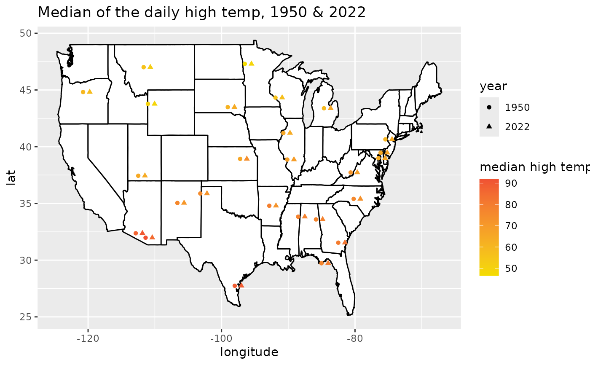

A representative set of monitoring locations were taken from NOAA data in 1950 and 2022 such that the locations are sampled roughly geographically across the continental US (the observations do not represent a random sample of geographical locations).
Format
A data frame with 18759 observations on the following 9 variables.
- location
Location of the NOAA weather station.
- station
Formal ID of the NOAA weather station.
- latitude
Latitude of the NOAA weather station.
- longitude
Longitude of the NOAA weather station.
- elevation
Elevation of the NOAA weather station.
- date
Date the measurement was taken (Y-m-d).
- tmax
Maximum daily temperature (Farenheit).
- tmin
Minimum daily temperature (Farenheit).
- year
Year of the measurement.
Source
NOAA Climate Data Online. Retrieved 23 September, 2023.
Details
Please keep in mind that the data represent two annual snapshots, and a complete analysis would consider more than two years of data and a random or more complete sampling of weather stations across the US.
Examples
library(dplyr)
library(ggplot2)
library(maps)
summarized_temp <- us_temperature |>
group_by(station, year, latitude, longitude) |>
summarize(tmax_med = median(tmax, na.rm = TRUE)) |>
mutate(plot_shift = ifelse(year == "1950", 0, 1)) |>
mutate(year = as.factor(year))
#> `summarise()` has grouped output by 'station', 'year', 'latitude'. You can
#> override using the `.groups` argument.
usa <- map_data("state")
ggplot(data = usa, aes(x = long, y = lat)) +
geom_polygon(aes(group = group), color = "black", fill = "white") +
geom_point(
data = summarized_temp,
aes(
x = longitude + plot_shift, y = latitude,
color = tmax_med, shape = year
)
) +
scale_color_gradient(high = IMSCOL["red", 1], low = IMSCOL["yellow", 1]) +
ggtitle("Median of the daily high temp, 1950 & 2022") +
labs(
x = "longitude",
color = "median high temp"
) +
guides(shape = guide_legend(override.aes = list(color = "black")))
